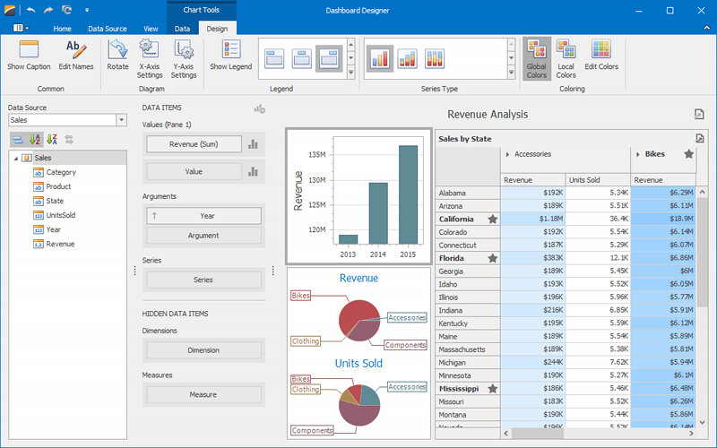

Dashboards
The Dashboard Designer provides an intuitive UI that facilitates data binding and shaping, and layout design. Many of these normally complex tasks can be accomplished with a simple drag-and-drop operation, allowing you to start creating dashboards immediately.

Creating Dashboards
The following topics will guide you through the process of creating a dashboard.
- Creating a Dashboard
- Providing Data
- Working with Data
- Adding Dashboard Items
- Binding Dashboard Items to Data
- Designing Dashboard Items
- Data Shaping
- Interactivity
- Appearance Customization
- Data Analysis
- Converting Dashboard Items
- Dashboard Layout
- Undo and Redo Operations
- Automatic and Manual Updates
- Saving a Dashboard
Printing and Exporting
The Dashboard Designer provides the capability to print or export the individual items of a dashboard, as well as the entire dashboard.
UI Elements
The topics in this section describe the main elements of a Dashboard Designer application.
- UI Elements
- Dashboard Viewer - enables you to display dashboards in Windows Forms applications.
Web Client Dashboard Reference
The Web Dashboard allows you to create and display dashboards on the web.